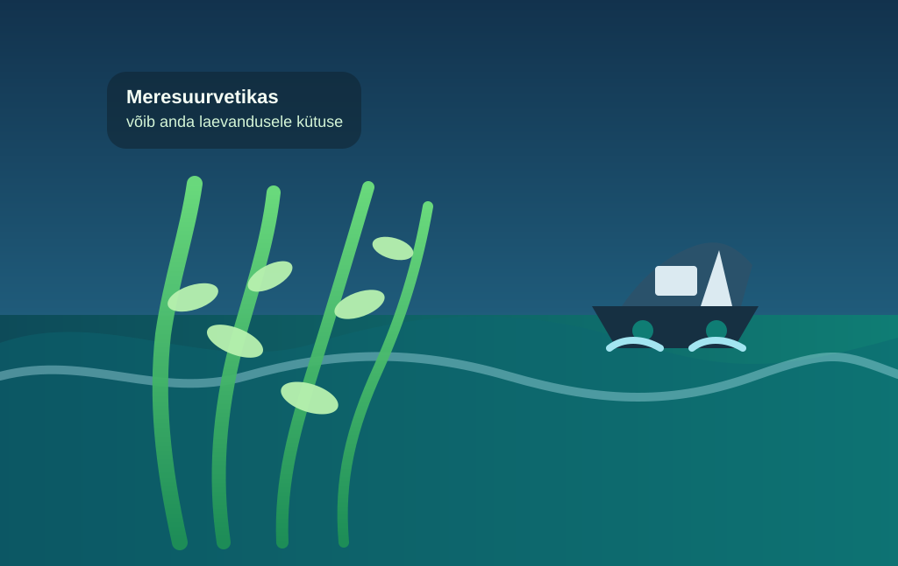

Meresuurvetikas annab laevandusele lootust

AP kirjutab, et Woods Hole’i laboris kasvatatakse kiiresti kasvavat kelpi, millest võiks ühel päeval saada kütust laevadele ja lennukitele. See on üks neid ideid, kus teadus kõlab samaaegselt nagu meri, labor ja natuke liiga optimistlik rannikuunistus.
Kelp meeldib teadlastele seetõttu, et seda saab kasvatada meres, ilma põllumaa, väetiste ja suure veenäljata. See kõlab nagu peaaegu liiga ilus lahendus, kuni meenub, et ka ilusad lahendused vajavad tehast, raha, taristut ja inimesi, kes ei pane silmi pööritades rahakotti kinni.
Uudise mõte pole, et homme asendab vetikas kõik fossiilkütused. Mõte on pigem selles, et fossiilsest sõltuvust on võimalik vähendada mitme eri nurga alt — ka üsna ootamatust kohast. Kui merest saab kunagi tankla, siis oleks see vähemalt üks haruldane juhtum, kus ookean ei ole probleem, vaid osa lahendusest.
Loe algallikat: AP News – "Kelp võib kunagi toita laevu ja lennukeid"
selle artikli sisu sõnastatud AI poolt: (mudel gpt-5.4-mini)